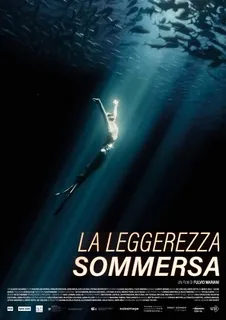
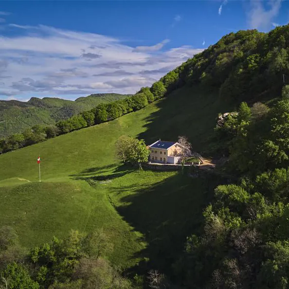

Sab 13 settembre – Vivi il tuo Ticino Escursione nella Valle della Piumogna

Vivi il tuo Ticino, in collaborazione con CAS Ticino e Mountain Muses (Pierre Crivelli), organizza, sabato 13 settembre 2025, un’escursione nella regione della Valle della Piumogna.
La giornata ha come scopo quello di far vivere una esperienza piacevole, rilassante, alla scoperta della
Natura ai piedi della montagna più alta completamente in territorio ticinese: il Pizzo Campo Tencia.
Durante l’escursione verranno condivisi saperi e conoscenze del luogo.
Il programma proposto consiste in attività in ambiente di montagna su percorso escursionistico Bianco rosso bianco T3. Richiesto un minimo di preparazione fisica.
Per iscriversi: https://www.viviiltuoticino.ch/esplora-il-ticino/escursione-valle-della-piumogna/
Tutti i dettagli nel PDF allegato:
Escursione nella Valle della Piumogna Sabato 13 settembre 2025 Vivi il tuo Ticino
Altre notizie
Tutte le news
Invito alle anteprime del film “La leggerezza sommersa”
Siete tutti invitati alle anteprime del nuovo film “La leggerezza sommersa” , che si terranno: Mercoledì 29 ottobre, ore 20.15 – Cinema LUX, Massagno Giovedì 30 ottobre, ore 20.15 – PALACINEMA, Locarno Clicca qui per…

Domenica 26 ottobre – Escursione in MTB nel Mendrisiotto
Vivi il tuo Ticino, in collaborazione con CAS Ticino, organizza per domenica 26 ottobre un’escursione in mountain bike alla scoperta del Mendrisiotto nella stagione del foliage. PROGRAMMA Domenica 26 ottobre…

Sabato 4 ottobre – Gita culturale al Dazio Grande
Sabato 4 ottobre proponiamo una visita alla mostra Après lift, versante sud. La mostra si prefigge di indagare il turismo invernale al sud delle Alpi e i suoi risvolti ambientali, sociali ed economici. Autori Nicola…